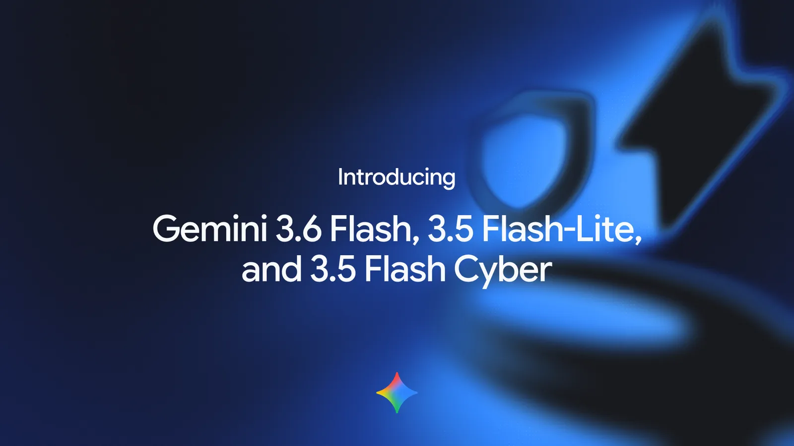
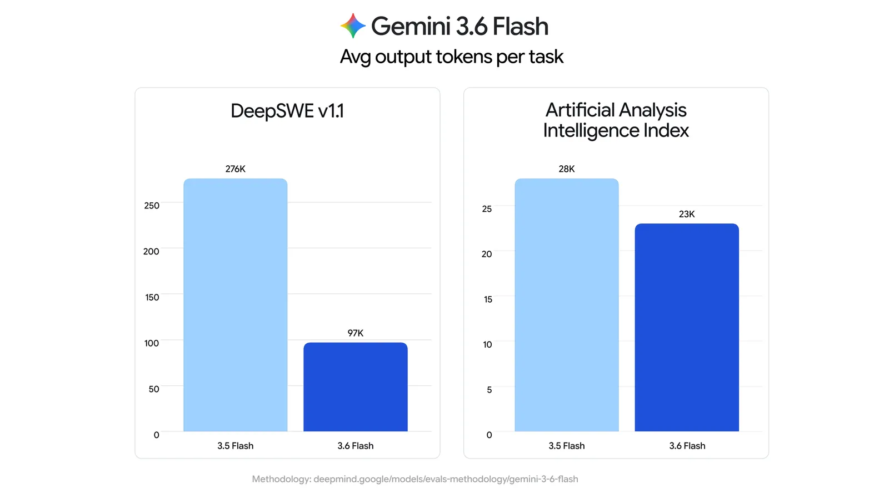
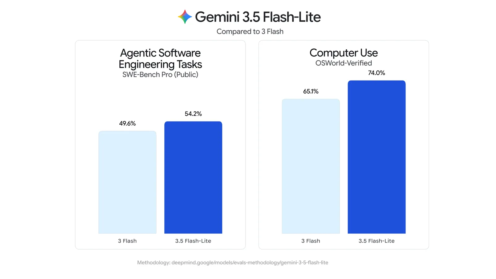

제미나이 3.6 플래시 등 경량 모델 3종 정리 — 3.5 플래시 대비 뭐가 달라졌나요
구글이 2026년 7월 21일(미국 기준) 제미나이 경량 모델 3종을 발표했어요. 3.6 플래시(Gemini 3.6 Flash)·3.5 플래시-라이트(Gemini 3.5 Flash-Lite)·3.5 플래시 사이버(Gemini 3.5 Flash Cyber), 이렇게 세 가지예요. 핵심은 3.6 플래시가 출력 토큰 사용량을 17% 줄인 점이에요(아티피셜 애널리시스 인덱스 기준).
이 글은 구글 공식 발표 기준으로 정리했어요. 궁금한 것만 보고 싶으면 아래 비교표부터 봐도 돼요.

구글이 공식 발표문에 올린 세 모델 소개 대표 이미지예요.
이미지 출처: 구글코리아 공식 블로그 — 제미나이 3.6 플래시 등 발표문 · 네이버 본문엔 받아서 재업로드 권장
제미나이 3.6 플래시는 제미나이 3.5 플래시를 잇는, 코딩·지식 작업·멀티모달 성능에 특화된 경량 모델이에요.
3.6 플래시, 3.5 플래시 대비 뭐가 달라졌나요
제미나이 3.6 플래시는 3.5 플래시보다 출력 토큰 사용량을 17% 줄이면서 코딩·지식 작업·컴퓨터 사용 성능은 끌어올린 모델이에요(아티피셜 애널리시스 인덱스 기준).
공식 발표문에는 이렇게 적혀 있어요.
"3.6 플래시는 3.5 플래시보다 출력 토큰 사용량을 17% 줄였습니다." (구글 공식 발표문, 2026.07.22 구글코리아 게시)
여기서 말하는 17%는 코딩·지식 작업·멀티모달을 아우르는 범용 효율 지표예요. 특정 작업 하나만 골라 잰 수치가 아니에요.
데이터커브(Datacurve)의 DeepSWE 벤치마크(장기 엔지니어링 작업 한정)에서는 최대 65%까지 줄었다고도 밝혀요. 17%와는 다른 기준이라 섞어 쓰면 안 돼요.

DeepSWE v1.1 기준 276K→97K(약 65%↓), 아티피셜 애널리시스 인덱스 기준 28K→23K(약 17%↓)로 서로 다른 수치예요.
이미지 출처: 구글코리아 공식 블로그 — 제미나이 3.6 플래시 등 발표문
가격도 낮아졌어요. 3.6 플래시는 입력 토큰 100만 개당 1.50달러, 출력 토큰 100만 개당 7.50달러예요. 기존 3.5 플래시보다 출력 요금이 낮아진 가격이에요(정확한 이전 가격은 공식 발표에서 별도로 확인되지 않았어요, 2026.07.31 기준).
- 코딩 정확도 — DeepSWE 벤치마크에서 49%(3.5 플래시는 37%)
- 컴퓨터 사용(Computer Use) — OS월드 검증(OSWorld-Verified)에서 83.0%(3.5 플래시는 78.4%)
3.5 플래시-라이트는 어떤 모델인가요
제미나이 3.5 플래시-라이트는 3.5 시리즈 중 속도와 비용 효율이 가장 높은 모델로, 아티피셜 애널리시스 인덱스 기준 초당 350개 출력 토큰을 처리해요.
에이전틱 검색·문서 처리처럼 지연 시간이 짧고 처리량이 많아야 하는 워크플로우용이에요. 가격은 입력 100만 토큰당 0.30달러, 출력 100만 토큰당 2.50달러고요(2026.07.31 기준).

3 플래시 대비 SWE-벤치 프로·OS월드 인증 점수 비교예요.
이미지 출처: 구글코리아 공식 블로그 — 제미나이 3.6 플래시 등 발표문
- SWE-벤치 프로(SWE-Bench Pro) — 54.2%(3 플래시는 49.6%)
- OS월드 인증(OSWorld-Verified) — 74.0%(3 플래시는 65.1%)
3.5 플래시-라이트는 제미나이 API·제미나이 엔터프라이즈·제미나이 앱에서 쓸 수 있고, 구글 검색에도 순차적으로 적용되고 있어요.
3.5 플래시 사이버는 뭐가 다른가요
제미나이 3.5 플래시 사이버는 3.5 플래시를 사이버 보안 취약점 탐지·수정에 특화하도록 미세 조정한 모델로, 아직 일반 공개 없이 파일럿 프로그램 단계예요.
구글의 코드 보안 에이전트 '코드멘더(CodeMender)' 안에서 여러 사이버 에이전트가 협력해 통합 보고서를 만들고, 사이버짐(CyberGym) 벤치마크에서 최상위권(Frontier) 모델에 필적하는 성능을 냈다고 밝혀요.
보안 취약점 탐지는 악용 가능성도 있는 이중 용도(dual-use) 기술이라, 구글은 코드멘더를 통해 정부 기관과 신뢰할 수 있는 파트너에게만 제한 제공해요.
가격은 공식 발표에서 확인되지 않았어요.
세 모델 스펙 한눈에 비교
| 모델 | 입력 $/100만 토큰 | 출력 $/100만 토큰 | 제공 상태 |
|---|---|---|---|
| 3.6 플래시 | $1.50 | $7.50 | 정식 출시 |
| 3.5 플래시-라이트 | $0.30 | $2.50 | 정식 출시 |
| 3.5 플래시 사이버 | 비공개 | 비공개 | 파일럿(정부·신뢰 파트너 한정) |
표: 제미나이 경량 모델 3종 가격·제공 상태 비교 (2026.07.31 기준, 구글 공식 발표문)
3.6 플래시·3.5 플래시-라이트는 개발자·기업·일반 이용자 모두에게 열려 있어요. 3.5 플래시 사이버만 아직 코드멘더를 통한 제한 제공이에요.
자주 묻는 질문
Q. 제미나이 3.6 플래시는 어디서 쓸 수 있나요?
제미나이 API(구글 AI 스튜디오·안드로이드 스튜디오)·구글 안티그래비티·제미나이 엔터프라이즈·제미나이 앱에서 쓸 수 있어요(2026.07.31 기준).
Q. 3.5 플래시 사이버는 지금 신청하면 쓸 수 있나요?
아니요. 정부 기관·신뢰 파트너에게만 코드멘더를 통해 제한 제공되고, 일반 신청 경로는 공식 발표에 없어요.
Q. 17%와 65% 중 어느 쪽이 체감 절감률인가요?
17%는 코딩·지식·멀티모달 범용 지표(아티피셜 애널리시스 인덱스)고, 65%는 DeepSWE 장기 엔지니어링 벤치마크 한정 수치예요.
참고한 곳
· 구글코리아 공식 블로그 — 제미나이 3.6 플래시, 3.5 플래시-라이트, 3.5 플래시 사이버 소개
· Google 공식 발표문(영문) — Gemini 3.6 Flash, 3.5 Flash-Lite, 3.5 Flash Cyber
✔ 같이 보면 좋아요
· 제미나이 작업 자동화 쓰는 법 — 쇼핑·예약·여행·티켓까지 대신 시키기
· 제미나이 쇼핑·예약·티켓 자동화, 카테고리별로 뭐가 되나요
하루 정리
· 구글이 2026.07.21(미국 기준) 제미나이 경량 모델 3종을 발표했어요(3.6 플래시·3.5 플래시-라이트·3.5 플래시 사이버)
· 3.6 플래시는 출력 토큰을 17% 줄이면서 가격도 내렸어요(100만 토큰당 입력 $1.50·출력 $7.50)
· 3.5 플래시-라이트는 초당 350토큰 처리하는 속도·비용 특화 모델이에요(입력 $0.30·출력 $2.50)
· 3.5 플래시 사이버는 파일럿 단계라 정부·신뢰 파트너에게만 제한 제공돼요
API 요금이나 속도가 궁금하면 표부터, 보안 쪽 소식이 궁금하면 사이버 부분부터 보시면 돼요.